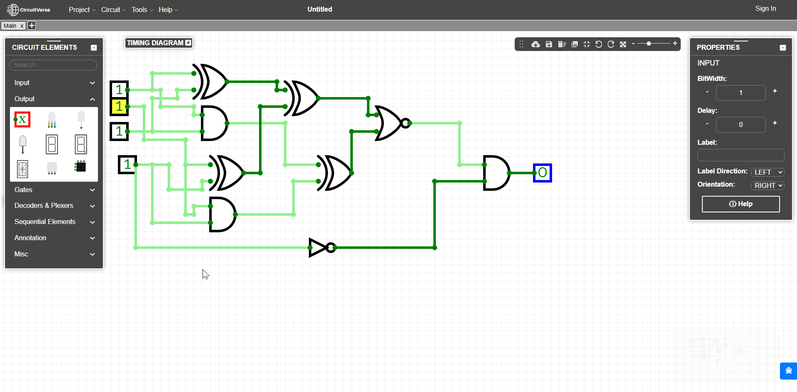

Using half adders, we are able to find out if a number is divisble by 3 Then, we can just use the least significant bit to figure out if a number is also divisible by 2 Combining them, we get a way to tell if a 4 bit number is divisble by 6 I dont do logic circuits I was just in bed and had the idea to solve this
Logisim file